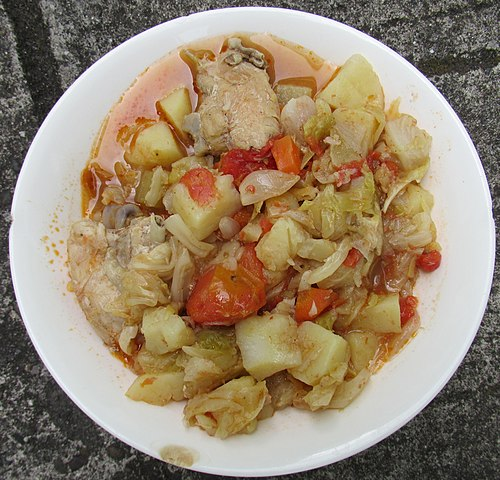

Chicken Recipe

Description
This is an easy recipe for baked chicken and rice. It is a tasty meal that requires very little preparation. Even if you're just cooking for yourself, making a large batch means you'll have tasty microwavable dinners for the next couple of days. If you're cooking for a casual get together, this is a great recipe, since it frees you up to chat, or make a salad, while the chicken and rice is cooking in the oven.
Ingredients
- 1 cup(195g) of rice
- 1 Tbs.(14g) butter
- 1 medium onion
- 1 can(305g) cream of mushroom soup
- 4 lb.(1.8kg) chicken parts
Steps
- Melt one tablespoon butter in a large oven-safe pan. If you're planning on using a different pan to bake the chicken, then you can use a saucepan for this.
- When the butter foams and begins to subside, add one cup rice to the melted butter.
- Cook, while stirring, until some of the rice becomes opaque. The rice will become lightly browned while we cook the onions in the next step.
- Add the diced onions and cook until tender (about 2 minutes). Meanwhile, whisk the can of cream of mushroom with 2-1/2 cup water until smooth.
- Pour the cream of mushroom mixture into the pan and stir to combine.
- Add the chicken pieces to the mixture.
- Bake at 375F for 1 hour or until thighs read 170F. If using drumsticks, begin checking for doneness after 45 minutes. In general, it's pretty hard to overcook dark meat prepared in this manner, so don't worry too much.
- After removing the chicken from the oven, let it stand for about five minutes before scooping out the rice and chicken pieces. (Otherwise, the rice will probably flow everywhere, and it will be difficult to plate effectively).
Home